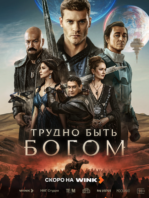

👁
Просмотров 52 781

О сериале
Далекое будущее. Земляне помогают менее развитым цивилизациям преодолеть тяжелые этапы развития. Сотрудник Института истории Антон отправляется в средневековый Арканар, чтобы спасти ученых, способных продвинуть прогресс. Ему предстоит стать доном Руматой Эсторским — богатым аристократом, любителем драк, выпивки и женщин. Главное правило прогрессоров — не вмешиваться напрямую в естественный ход истории, точечно спасая немногочисленных просветителей от гибели. Но у Антона есть личный интерес, который он скрыл от Института: где-то в Арканаре без вести пропал его отец.
Смотрите онлайн в высоком качестве.
Комментарии зрителей
🎬
artem_god_99
4 сентября 2026, 21:14
Только досмотрел первые 4 серии — это просто разрыв! Глубокая, философская и невероятно мрачная адаптация. Атмосфера средневекового застоя держит от первой до последней минуты. Жду продолжения ⚔️🧠
🎥
katerina_volkova
4 сентября 2026, 22:47
Очень тяжёлая и артхаусная экранизация. Много грязи и затянутых сцен, но атмосфера Арканара передана отлично. Первые серии уже показывают, что это не лёгкий сериал на вечер.
🍿
dark_rider_007
5 сентября 2026, 00:18
Реально сочный и визуально брутальный проект! Постановка, мрачная детализация Арканара, работа со светом — на высоте. Рад, что первые 4 серии уже здесь в хорошем качестве, плеер стабильный 👍
⭐
sergey_k33
5 сентября 2026, 08:32
На один раз посмотреть стоит. Погружение в этот тёмный мир затягивает, особенно первые две серии. К третьей-четвёртой темп чуть проседает, но в целом держит.
🎭
masha_star
5 сентября 2026, 11:05
Дон Румата — просто огонь! Сколько боли и внутренней силы. После 4-й серии уже не могу дождаться следующих. Финал четвёртой серии — настоящий удар 💔
🌟
roman_b_1991
5 сентября 2026, 12:40
Очередная попытка экранизировать классику. Персонажи жёсткие, мораль местами в лоб. Но атмосфера и визуал спасают. Первые серии посмотрел, дальше посмотрим.
👤
alina_fox
5 сентября 2026, 14:22
Какая же жиза про бессилие, когда пытаешься помочь, а люди сами выбирают тьму! Саундтрек и визуал затягивают. Вчера вечером залпом посмотрела все 4 серии 🔥
🎞️
phantom_v
5 сентября 2026, 15:50
Местами слишком натуралистично и тяжело. Но если любите мрачную фантастику по Стругацким — первые серии уже стоит посмотреть.
🏆
dmitry_vladimirov
5 сентября 2026, 16:33
Хороший качественный историко-фантастический сериал. Картинка чёткая, грузит моментально. Первые 4 серии уже дают понять масштаб.
📽️
lenochka_sweet
5 сентября 2026, 18:11
Это топ! Особенно 4-я серия — кульминация уже чувствуется. Смотрели вчера ночью на одном дыхании ✨
🎬
vitalik_94
5 сентября 2026, 19:27
Середняк с сильной атмосферой. Посмотреть ради мрачного Средневековья и декораций можно. Первые серии уже есть — буду ждать следующие.
🎥
dashik_boo
5 сентября 2026, 20:45
Сюжетная линия с «чёрным братством» уже в первых сериях зацепила! Неожиданные повороты есть. Рекомендую 😱